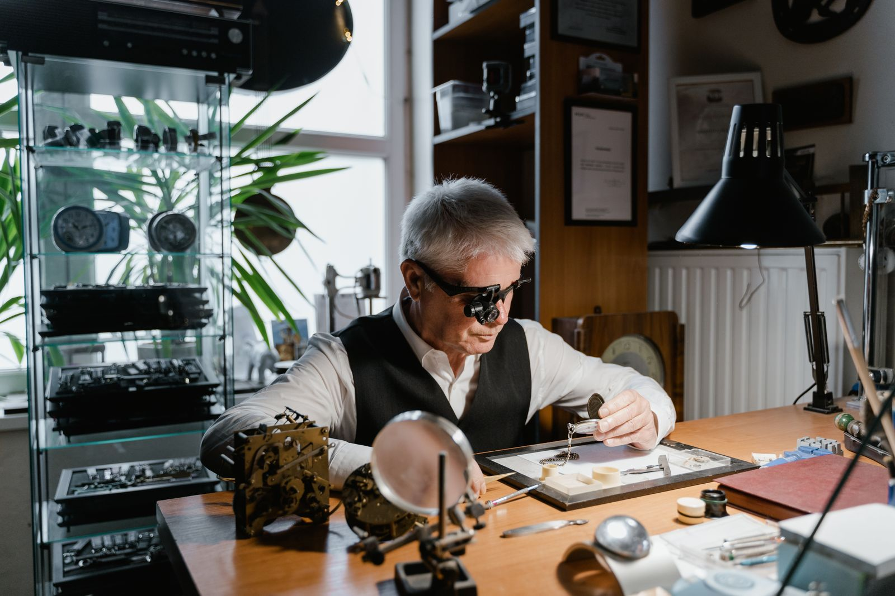

Time, taken apart and put right.
I service, restore and regulate mechanical watches by hand — every movement stripped, cleaned, inspected and timed on the machine before it leaves the bench. You get the timing figures in writing, the old parts back in a bag, and a price agreed before I start — not after.

A timing-machine readout, the way yours will be reported — this one from bench no. 243, below.
01 — The Bench Register
Recent work, logged the way it left the bench
Every watch that comes in gets a bench number and a written record: what it is, what was done, and the timing figures it achieved. Six recent entries:
| No. | Watch | Movement | Work done | Timing after | Bench time | Status |
|---|---|---|---|---|---|---|
| 241 | Chronograph, 1969 | Valjoux 7733, manual | Full service; worn centre wheel and bent chrono runner replaced | +4 s/d · 276° · 0.2 ms | 5 weeks | Returned |
| 242 | Dress watch, 1956 | Bumper automatic | Restoration service; original dial and crown kept, untouched | +7 s/d · 261° · 0.3 ms | 7 weeks | Returned |
| 243 | Dive watch, 2008 | Automatic, cal. 2824-2 | Full service; full gasket set; pressure tested to 20 bar | +2 s/d · 298° · 0.1 ms | 4 weeks | Returned |
| 244 | Pocket watch, c. 1910 | Swiss lever, 15 jewel | Service; broken balance staff re-pivoted on the lathe | +18 s/d · 214° · 0.6 ms | 8 weeks | In regulation |
| 245 | Cocktail watch, 1962 | Manual, 17 jewel | Running fast: magnetised. Demagnetised and regulated only — no service needed | +5 s/d · 244° · 0.2 ms | 1 week | Returned |
| 246 | Chronograph, 1974 | Automatic chrono | Strip and inspection complete; worn reverser wheels on order | — | — | Awaiting parts |
Timing is given as rate (seconds gained per day) · balance amplitude · beat error, measured over five positions. Entry 244 is printed exactly as it stands: a worn century-old movement gets the best rate its condition allows, and I say what that is rather than dress it up.
02 — A Full Service
What a service actually involves
A “service” is not a battery change and a polish. It is the movement taken completely apart and rebuilt. Seven stages, in order:
Assessment & estimate
The watch is timed, opened and inspected under magnification. You receive a written estimate and the timing figures as found. If you decline, the watch comes back as it arrived — the assessment fee is the only charge.
Strip-down
Case, dial and hands off; the movement dismantled to its last screw — typically 130 to 300 parts — each laid out in order on the bench tray.
Cleaning
Parts cleaned in the ultrasonic machine in watchmaking solutions, then rinsed and dried. The case and bracelet are cleaned separately; nothing abrasive touches an original finish unless you ask for it.
Inspection & parts
Every pivot, jewel and tooth checked under the microscope. Worn parts — most often the mainspring, reverser wheels or a cracked jewel — are replaced and listed on your invoice. Nothing is substituted without telling you first.
Reassembly & lubrication
The movement rebuilt and oiled as it goes: up to five different lubricants, each in drops smaller than a pinhead, placed only where the maker specifies.
Regulation
Timed on the machine and adjusted in five positions — dial up, dial down, crown up, crown down, crown left. A modern movement leaves regulated to within −2/+8 seconds a day; an old one to the best its condition honestly allows.
Sealing & final control
Gaskets replaced, case closed, water resistance pressure-tested where the watch is rated for it. Then 48 hours of running checks before the watch is released.
03 — Start With the Symptom
What is your watch doing?
Pick the closest symptom. Each one says what usually causes it, what happens first, and what it is likely to cost — before you commit to anything.
04 — Prices
Service prices, published
A full service at the prices below, confirmed in a written estimate once I have seen the watch. If the estimate and the invoice ever differ, it is because you agreed a change in between.
| Movement | What the price covers | Full service |
|---|---|---|
| Manual-wind | Strip, clean, inspect, lubricate, regulate in five positions, case clean, 48-hour check | from £260 |
| Automatic | As above, plus the automatic winding work stripped and serviced | from £320 |
| Chronograph | As above, plus the chronograph mechanism — around 60 extra parts — timed through its functions | from £480 |
| Vintage, pre-1970 | Assessment first (£45, deducted from the service). Older movements need more bench time and parts are often made or sourced, so the estimate is firmer than the starting price | from £395 |
| Assessment only | Timing as found, full strip inspection, written estimate and report. Deducted in full if the work goes ahead | £45 |
| Timing check & demagnetise | Demagnetise, time in five positions, regulate if the movement allows it. The right first step for a watch that has suddenly changed its rate | £30 |
What can change a quote
- A mainspring at the end of its life — £45 fitted during a service.
- Cracked or crazed crystal: acrylic £35, mineral glass £55, sapphire quoted per watch.
- Worn crown and tube — from £60, including a reseal and pressure test.
- Parts the maker no longer supplies: sourced new-old-stock or made on the lathe, always priced and agreed with you first.
- Water damage. Rust changes everything; the assessment will say how far it has gone before you spend anything.
What a service does not include
- Case or bracelet refinishing — offered separately, and on vintage watches I will usually advise against it.
- Dial restoration or reluming. Original dials and hands stay original.
- Strap or bracelet replacement, beyond a clean and a spring-bar check.
- A guarantee of a maker’s chronometer certificate — I report the rate your watch achieves; certification is the maker’s business.
05 — From the Owner
Bench no. 242, in the owner’s words
“Two jewellers told me the dial needed refinishing and the watch would be ‘like new’. Mr Whitaker talked me out of it — he said the dial was the watch. It came back running seven seconds fast a day, with every figure written down and its old crown still on it. It looks like my grandfather’s watch, because it is.”
R. Ellison, Bristol — owner of the 1956 dress watch, bench no. 242 · Read the case study →
Book a watch in
Tell me what the watch is and what it is doing. You will get a reply within two working days with the next bench slot and exactly how to send it — or bring it in yourself if you are near Bath.
Start a booking or write directly: bench@whitaker-watch.example